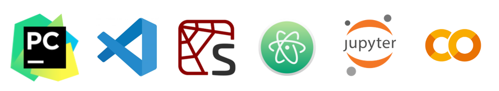

En este recorrido, exploraremos el concepto fundamental de repositorio en el desarrollo colaborativo de programación. También dedicaremos tiempo a comprender qué es Python y sus ventajas. Además, profundizaremos en el entorno de desarrollo de Python, abordando aspectos esenciales como la importación de paquetes, el manejo de datos y la comprensión de la sintaxis básica del lenguaje.
 Familiarizar a los participantes con el entorno de desarrollo de Python e introducir los conceptos básicos del lenguaje como tipos de datos y la sintaxis básica.
Familiarizar a los participantes con el entorno de desarrollo de Python e introducir los conceptos básicos del lenguaje como tipos de datos y la sintaxis básica.
A continuación, encontrarás el enlace para el Colab notebook que se usará en la sesión. Este notebook le permitirá seguir los temas cubiertos, practicar con ejemplos y ejercicios, y explorar los conceptos básicos de Python. Por favor, asegúrate de tener acceso a Google Colab y una cuenta de Google para poder participar plenamente en las actividades.
Links Colab Notebook: sesión 1.
Además, te invitamos a revisar la presentación de la sesión 1, que contiene una introducción a los temas que se abordarán en la sesión y proporciona una visión general de los conceptos clave de Python y su entorno de desarrollo.
Links: Presentación de la sesión 1.
En la página del curso, encontrarás los códigos y materiales de apoyo utilizados en las sesiones, así como enlaces a recursos adicionales y ejemplos prácticos que te ayudarán a consolidar los conceptos básicos y a adquirir una comprensión más profunda del lenguaje de programación Python.
¡Esperamos que disfrutes de esta sesión y que te sientas motivado a explorar más sobre Python y sus aplicaciones en la economía del cuidado!
Comenzaremos explorando la importancia de los repositorios en el desarrollo de software profesional, así como la función vital de herramientas como Git y plataformas como GitHub en la gestión eficiente del código fuente y la colaboración entre equipos. Además, facilitaremos el acceso al repositorio del curso, donde se encontrarán todos los códigos y materiales de apoyo. Te guiaremos en el proceso de clonar este repositorio para mantener una copia local actualizada y cómo sincronizarla con tu Google Drive para un acceso rápido y seguro al material durante todo el curso.
Python es un lenguaje de programación de alto nivel, interpretado y de propósito general. Es conocido por su sintaxis clara y legible, lo que lo hace ideal para principiantes y expertos por igual. Python es un lenguaje versátil que se utiliza en una amplia variedad de aplicaciones, desde el desarrollo web y la ciencia de datos hasta la automatización de tareas y la creación de juegos.
A continuación, se presentan algunas de las características clave de Python que lo hacen tan popular:
Un entorno de desarrollo es un conjunto de herramientas que facilitan la escritura, ejecución y depuración de código de programación. Un entorno de desarrollo típico incluye un editor de código, un intérprete o compilador, un depurador y otras herramientas que ayudan a los desarrolladores a trabajar de manera eficiente. Los entornos de desarrollo modernos suelen ser altamente personalizables y ofrecen características avanzadas como resaltado de sintaxis, autocompletado de código y control de versiones integrado.

Para trabajar con Python, es necesario contar con un entorno de desarrollo que permita escribir, ejecutar y depurar código de manera eficiente. Existen varios entornos de desarrollo populares para Python, como Jupyter Notebooks, PyCharm, Visual Studio Code y Google Colab. En este curso, utilizaremos Google Colab, un entorno de desarrollo basado en la nube que permite escribir y ejecutar código de Python en un navegador web sin necesidad de instalar nada en tu computadora.
Google Colab es un entorno de desarrollo basado en la nube que permite escribir y ejecutar código de Python en un navegador web. Colab ofrece una amplia variedad de características y herramientas que facilitan la escritura, ejecución y depuración de código de Python, incluyendo:
Si deseas conocer más sobre Google Colab, puedes consultar la documentación oficial en el siguiente enlace: Google Colab.
Un notebook es un documento interactivo que combina texto formateado, código de programación y resultados en un solo lugar. Los notebooks son una forma eficaz de escribir y compartir código de programación, ya que permiten explicar el código en detalle, mostrar los resultados de forma visual y facilitar la colaboración entre desarrolladores. Los notebooks son ampliamente utilizados en la ciencia de datos, el aprendizaje automático y la investigación científica para documentar y compartir el trabajo realizado.
En Google Colab, los notebooks se crean y editan en un entorno basado en la nube que permite escribir y ejecutar código de Python en un navegador web. Los notebooks de Colab son compatibles con Markdown, lo que permite incluir texto formateado, imágenes y gráficos en el documento. Además, los notebooks de Colab se pueden exportar a diferentes formatos, como HTML, PDF y Markdown, lo que facilita la compartición y publicación de resultados.
Para crear un nuevo notebook en Google Colab, sigue estos pasos:
Otra forma de crear un Colab Notebook es desde Google Drive.

Una librería en Python es una colección de módulos que proporcionan funciones y métodos predefinidos que puedes utilizar para realizar tareas específicas sin tener que escribir todo el código desde cero. Las librerías te ayudan a reutilizar código y acelerar el desarrollo de tus programas. Por ejemplo, en lugar de escribir tu propio código para manejar datos en formato CSV, puedes usar una librería como pandas que ya tiene esta funcionalidad incorporada.
Instalación de Paquetes en Python Local
Para instalar paquetes en un entorno local, se utiliza el gestor de paquetes pip. A continuación, se muestra cómo hacerlo desde la línea de comandos:
pip install nombre_del_paquete
Por ejemplo, para instalar pandas, ejecutarías:
pip install pandas
import pandas as pd
print(pd.__version__)
Instalación de Paquetes en Google Colab
Recuerda
En Google Colab, encontrarás una variedad de bibliotecas de Python preinstaladas, desde las fundamentales como NumPy y Pandas hasta las especializadas como TensorFlow y Matplotlib. Esta preinstalación tiene como objetivo principal simplificar el proceso de inicio y facilitar el trabajo en proyectos de análisis de datos, aprendizaje automático y otros campos de la ciencia de datos.
Para verificar si una librería está preinstalada en Google Colab:
!pip show nombre_del_paquete
Para instalar paquetes en Google Colab, se utiliza el gestor de paquetes pip. A continuación, se muestra cómo hacerlo desde una celda de código:
!pip install nombre_del_paquete
En Python, los tipos de datos son la forma en que se almacenan y representan los valores en la memoria. Los tipos de datos en Python se dividen en dos categorías principales: tipos de datos básicos y tipos de datos compuestos. Los tipos de datos básicos son los tipos de datos primitivos que se utilizan para representar valores simples, como números, cadenas y booleanos. Los tipos de datos compuestos son los tipos de datos que se utilizan para representar colecciones de valores, como listas, tuplas y diccionarios.
Los tipos de datos básicos en Python incluyen:
a = 10
print(a)
b = 10.5
print(b)
is_true = True
is_false = False
text = 'Hola'
text
Los tipos de datos compuestos en Python incluyen:
fruits = ['manzana','plátano','cereza']
fruits
numbers = (1,2,3)
print(numbers)
student = {'nombre':'Juan','edad':25, 'carrera':'Ingeniería'}
print(student)
unique_numbers = {1,2,3}
print(unique_numbers)
Los tipos de datos en Python son fundamentales para representar valores y colecciones de valores en la memoria. Al utilizar tipos de datos, puedes almacenar, manipular y procesar información de manera eficiente en tus programas de Python.
Para aprender más sobre los tipos de datos en Python, puedes consultar la documentación oficial de Python en el siguiente enlace: Python Data Types.
Los operadores en Python son símbolos especiales que se utilizan para realizar operaciones sobre valores y variables. Los operadores en Python se dividen en varias categorías, como operadores aritméticos, operadores de asignación, operadores de comparación, operadores lógicos y operadores de identidad. A continuación, se presentan algunos de los operadores más comunes en Python:
Los operadores en Python son fundamentales para realizar operaciones sobre valores y variables de manera eficiente. Al utilizar operadores, puedes realizar cálculos matemáticos, comparar valores, combinar expresiones lógicas y verificar la identidad de objetos en Python.
Para aprender más sobre los operadores en Python, puedes consultar la documentación oficial de Python en el siguiente enlace: Python Operators.
Las estructuras de control en Python son bloques de código que permiten controlar el flujo de ejecución de un programa. Las estructuras de control en Python se dividen en tres categorías principales: estructuras de control condicionales, estructuras de control de bucle y estructuras de control de función. A continuación, se presentan algunas de las estructuras de control más comunes en Python:
Las estructuras de control en Python son fundamentales para escribir programas eficientes y fáciles de entender. Al utilizar estructuras de control, puedes controlar el flujo de ejecución de un programa y realizar tareas complejas de manera sencilla.
Para aprender más sobre las estructuras de control en Python, puedes consultar la documentación oficial de Python en el siguiente enlace: Python Control Flow.
Los condicionales en Python son estructuras de control que permiten ejecutar un bloque de código si se cumple una condición. Los condicionales en Python se definen con las palabras clave if, elif y else, seguidas de una expresión booleana que evalúa si la condición es verdadera o falsa. Los condicionales en Python pueden tener múltiples bloques de código y anidamientos para controlar el flujo de ejecución de un programa de manera eficiente.
Para definir un condicional en Python, sigue estos pasos:
Por ejemplo, el siguiente condicional verifica si un número es positivo, negativo o cero:
number = 0
if number > 0:
print('El número es positivo.')
elif number < 0:
print('El número es negativo.')
else:
print('El número es cero.')
Los condicionales en Python son fundamentales para controlar el flujo de ejecución de un programa y realizar tareas condicionales de manera eficiente. Al utilizar condicionales, puedes ejecutar bloques de código basados en condiciones específicas y tomar decisiones en tiempo de ejecución.
Para aprender más sobre los condicionales en Python, puedes consultar la documentación oficial de Python en el siguiente enlace: Python If Statements.
Los bucles en Python son estructuras de control que permiten repetir un bloque de código varias veces. Los bucles en Python se dividen en dos categorías principales: bucles for y bucles while. Los bucles for se utilizan para iterar sobre una secuencia de elementos, como listas, tuplas y diccionarios. Los bucles while se utilizan para repetir un bloque de código mientras se cumpla una condición.
Para definir un bucle for en Python, sigue estos pasos:
Por ejemplo, el siguiente bucle for imprime los números del 1 al 5:
for i in range(1, 6):
print(i)
Para definir un bucle while en Python, sigue estos pasos:
Por ejemplo, el siguiente bucle while imprime los números del 1 al 5:
i = 1
while i < 6:
print(i)
i += 1
La principal diferencia entre los bucles for y while radica en cómo se controlan las iteraciones y en cuándo se evalúa la condición de salida.
El bucle for se utiliza cuando se conoce el número exacto de iteraciones o cuando se desea recorrer un conjunto de datos de tamaño definido. Mientras que el bucle while se utiliza cuando se desconoce el número de iteraciones o cuando se desea ejecutar un código de forma repetitiva mientras se cumpla una condición específica.
Los bucles en Python son fundamentales para repetir un bloque de código varias veces y realizar tareas iterativas de manera eficiente. Al utilizar bucles, puedes recorrer secuencias de elementos, realizar cálculos repetitivos y controlar el flujo de ejecución de un programa.
Para aprender más sobre los bucles en Python, puedes consultar la documentación oficial de Python en el siguiente enlace: Python While Loops.
Una función en Python es un bloque de código que realiza una tarea específica y devuelve un resultado. Las funciones en Python se definen con la palabra clave def, seguida del nombre de la función y los parámetros entre paréntesis. Las funciones en Python pueden tener parámetros opcionales, valores de retorno y docstrings que describen su funcionalidad.
¿Qué es un docstring?
Un docstring es una cadena de texto que se utiliza para documentar una función, clase o módulo en Python. Los docstrings se colocan en la primera línea de la definición de la función, clase o módulo, y se utilizan para describir su funcionalidad, parámetros, valores de retorno y ejemplos de uso. Los docstrings son una forma eficaz de documentar el código y facilitar su comprensión y mantenimiento.
Para definir una función en Python, sigue estos pasos:
Por ejemplo, la siguiente función suma dos números y devuelve el resultado:
def suma(a, b):
"Esta función suma dos números."
return a + b
print(suma(5, 3))
Función lambda
Una función lambda en Python es una función anónima que se define con la palabra clave lambda, seguida de los parámetros y una expresión que define la tarea a realizar. Las funciones lambda se utilizan para definir funciones simples y de una sola línea que no requieren un nombre ni una definición formal. Por ejemplo, la siguiente función lambda suma dos números:
suma = lambda a, b: a + b
print(suma(5, 3))
Las funciones en Python son fundamentales para organizar y reutilizar código de manera eficiente. Al utilizar funciones, puedes dividir un programa en bloques de código más pequeños y fáciles de entender, lo que facilita la escritura, depuración y mantenimiento del código.
Para aprender más sobre las funciones en Python, puedes consultar la documentación oficial de Python en el siguiente enlace: Python Functions.
Asociación del Lenguaje Python. (2024). Documentación de Python 3.12.4. https://docs.python.org/3/
Google Colab. (2024). Colaboratory. https://colab.research.google.com/
Nelli, F. (2018). Python data analytics with Pandas, NumPy, and Matplotlib.https://doi.org/10.1007/978-1-4842-3913-1
Severance, C. (2016). Python for everybody: Exploring Data using python 3. https://www.py4e.com/book
Sweigart, A. (2019). Automate the boring stuff with Python: practical programming for total beginners. https://automatetheboringstuff.com/